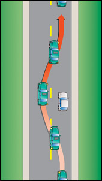
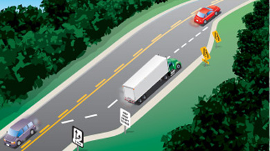
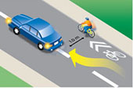
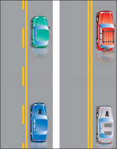
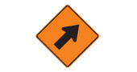

Everything the handbook says about passing, collected from 15 pages and reorganized with a three-part template. The handbook’s sentences are quoted word for word; only their order and the headings are new.
1
主題介紹Topic introduction
這個主題是什麼？
What is this topic?
2
一般指引General guidance
一般應該怎麼做、注意什麼？
What should a driver generally do, and watch for?
3
特定情境下的指引Situation-specific guidance
遇到哪些具體情境時，需要補充或調整？
Which specific situations add to or change that guidance?
80 段引文80 passages
15 個頁面15 pages
4 個章節4 chapters
32 個情境32 situations
內容從哪裡來、到哪裡去Where the text came from, and where it went
左邊是每段文字在手冊中的位置，右邊是整理後的位置。線的粗細代表句數。
Left: where each passage sits in the handbook. Right: where it sits after reorganizing. Band width is the number of sentences.
5644%句來自 Changing positions 頁，也就是手冊放 Passing 章節的那一頁sentences come from Changing positions, the page that holds the Passing section
7056%句來自其他 14 頁，分布在 4 個章節sentences come from 14 other pages across 4 chapters
主題介紹Topic introduction
一般指引General guidance
特定情境下的指引Situation-specific guidance
Changing positions 頁Changing positions page
其他頁面Other pages
名稱旁的數字是句數。滑鼠移到名稱上可以追蹤它的內容；點右邊的名稱可以跳到該部分。Numbers beside each name are sentence counts. Hover a name to trace its text; click a name on the right to read that part.以表格顯示Show as a table
來源（手冊）From (handbook)
去向（整理後）To (reorganized)
句數Sentences
Changing directionsChanging directions
地點、標線與標誌Places, lines and signs
1
Changing directionsChanging directions
超越的對象What you are passing
1
本頁開頭Page intro
主題介紹Topic introduction
1
本頁開頭Page intro
超車前Before you pass
1
PassingPassing
主題介紹Topic introduction
4
PassingPassing
超車前Before you pass
2
PassingPassing
超車步驟Steps
9
PassingPassing
地點、標線與標誌Places, lines and signs
3
PassingPassing
超越的對象What you are passing
5
PassingPassing
被超車時Being passed
8
Passing at nightPassing at night
時間與天候Light and weather
8
Passing and climbing lanesPassing and climbing lanes
道路與車道Roads and lanes
4
Passing on the shoulderPassing on the shoulder
道路與車道Roads and lanes
2
Passing on the rightPassing on the right
道路與車道Roads and lanes
5
Passing streetcarsPassing streetcars
超越的對象What you are passing
4
Particular situationsParticular situations
超越的對象What you are passing
2
Driving alongDriving along
超車前Before you pass
1
Night and bad weatherNight and bad weather
時間與天候Light and weather
8
Night and bad weatherNight and bad weather
超越的對象What you are passing
3
Freeway drivingFreeway driving
道路與車道Roads and lanes
4
Freeway drivingFreeway driving
被超車時Being passed
1
Getting ready to driveGetting ready to drive
時間與天候Light and weather
1
Sharing the roadSharing the road
超越的對象What you are passing
20
StoppingStopping
地點、標線與標誌Places, lines and signs
1
StoppingStopping
超越的對象What you are passing
1
Pavement markingsPavement markings
地點、標線與標誌Places, lines and signs
3
SignsSigns
地點、標線與標誌Places, lines and signs
1
SignsSigns
道路與車道Roads and lanes
1
SignsSigns
超越的對象What you are passing
3
Keeping your licenceKeeping your licence
超越的對象What you are passing
2
Losing your licenceLosing your licence
被超車時Being passed
1
Sample test questionsSample test questions
被超車時Being passed
3
TowingTowing
拖車時Towing a trailer
12
每條線把手冊中的一段文字（左）連到它整理後的位置（右）。滑鼠移到任一段落上，就會標出它和對應的另一端。Each line joins a passage in the handbook (left) to its place in the reorganized topic (right). Hover a passage to highlight both ends.
手冊放 Passing 章節的那一頁。The page that holds the handbook’s Passing section.
Changing your position on the road involves changing lanes or overtaking and passing another vehicle. Before beginning, be sure you have enough space and time to complete the move safely.
Changing lanes · 不屬於這個主題not part of this topic
Passing
Passing is changing lanes to move past a slower vehicle. While all public roads have speed limits, not all vehicles travel at the same speed. For example, cyclists, road service vehicles and drivers ahead that are preparing to turn are usually slower than the through traffic. You may want to pass some slow-moving vehicles when you are following them.
Never overtake and pass another vehicle unless you are sure you can do so without danger to yourself or others. Don't pass moving snow plows under any conditions. If in doubt, do not pass.
Here are the steps for passing a vehicle:
Use your left-turn signal to show that you want to pass and check that the way is clear ahead and behind before moving into the passing lane.
Watch for bicycles and small vehicles that may be hidden from view in front of the vehicle you are about to pass. Also watch for vehicles that may be turning left in front of you and vehicles or pedestrians entering the road from another road or driveway.
Change lanes only after signalling. After overtaking, signal that you want to move back into the lane you started from, and when you can see the entire front of the vehicle you are passing in your inside mirror, make the lane change. Be careful not to cut off a vehicle by suddenly moving in front of it.
If the vehicle you are passing speeds up, do not race. Go back to your original lane. And do not speed up when another driver is trying to pass you. It is unlawful and dangerous.

Diagram 2-46Alt text: “how to pass another vehicle”
Passing within 30 metres of a pedestrian crossover is not permitted. Passing left of a centreline is not permitted 30 metres from a bridge, viaduct or tunnel. Don't attempt to pass when approaching the crest of a hill or on a curve where your vision of oncoming traffic is obstructed and there is not enough clear distance ahead to pass in safety.
When passing parked vehicles, watch carefully for people suddenly opening doors or for doors opened to load and unload.
Motorcycles, bicycles, limited-speed motorcycles and mopeds often need to pull to the left or right side of their lane to avoid dangerous road conditions or to be seen by other drivers. Do not take this as an invitation to pass in the same lane. If you do want to pass these vehicles, do so by changing lanes.
When faster traffic wants to pass you, move to the right and let it pass in safety. When being passed on an undivided road where the passing driver has pulled into the opposite lane, pay attention to oncoming traffic and move closer to the right side of the lane. Be prepared to slow down to let the passing driver get in front of you more quickly to prevent a collision.
On many high-speed roads with three or more lanes in each direction, trucks are not allowed to drive in the far left-hand lane. This means that the lane next to it is the truck passing lane. If you are in this lane and a truck wants to pass, move into the right-hand lane as soon as you can.
Diagram 2-47Alt text: “how to pass another vehicle”
Passing at night
Be very careful when you pass other vehicles at night. If you have to pass and the way is clear, follow these steps:
Switch your headlights to low beams as you approach a vehicle from behind.
Signal, check your mirrors and blind spot, and pull out to pass. As you move alongside the vehicle you are passing, switch on your high beams. This will let you see more of the road ahead.
When you can see all of the front of the vehicle you are passing in your rear view mirror, you are far enough ahead to pull back into the right lane. Remember to signal.
Passing and climbing lanes

Diagram 2-48Alt text: “a passing or climbing lane”
Some roads have special passing or climbing lanes. These lanes let slower vehicles move into the right-hand lane so that faster ones can pass safely in the left lane.
An advance sign tells drivers they will soon have a chance to pass. Another sign warns when the lane is ending so drivers in the right-hand lane can begin to merge safely with traffic in the left-hand lane.
Passing on the shoulder
You may drive on the right shoulder only to pass a vehicle turning left and only if the shoulder is paved. You may not pass on the left shoulder, paved or not.
Passing on the right
Most passing is done on the left. You may pass on the right on multi-lane or one-way roads and when overtaking a streetcar or a left-turning vehicle.
Passing on the right can be more dangerous than passing on the left. If you are driving in the left most lane with a slower vehicle in front of you, wait for the vehicle to move to the right. Do not suddenly change lanes and pass on the right; the driver in front may realize you want to pass and move to the right at the same time you do.
Passing streetcars
Diagram 2-49Alt text: “a vehicle stopped the required two metres behind the rear doors of a stopped streetcar”
You must pass streetcars on the right unless you are driving on a one-way road.
At streetcar stops, stay at least two metres behind the rear doors where passengers are getting off or on. This rule does not apply at stops where an area has been set aside for streetcar passengers. Always pass these areas at a reasonable speed and be prepared for pedestrians to make sudden or unexpected moves.
Summary · 不屬於這個主題not part of this topic
其他 14 頁 · 4 個章節14 other pages · 4 chapters
同一個主題，分散在手冊各處。The same topic, spread across the handbook.
第 2 章安全與負責任的駕駛Ch 2Safe and Responsible Driving
Changing directions
Left turns · ¶5
… Wait for the smaller vehicle to move right before you pass.
Left-turn lanes · ¶3
… These left-turn lanes are not to be used for passing.
Particular situations
Workers on the road · ¶3
… Always slow down and pass with caution to prevent a collision. …
Animals on the road · ¶2
… If you see an animal on or near the road, slow down and pass carefully as they may suddenly bolt onto the road. …
Reacting to an approaching emergency vehicle · item 3
Wait for the emergency vehicle to pass and watch for other emergency vehicles that may be responding to the same call. …
Reacting to a stopped emergency vehicle or tow truck · ¶1
When approaching any emergency vehicle that is stopped with its red, or red and blue, lights flashing or a tow truck with its amber lights flashing in the same direction of your travel, you are required to reduce the speed of your vehicle and proceed with caution. …
Reacting to a stopped emergency vehicle or tow truck · ¶3
When the roadway has two or more lanes of traffic in the same direction of your travel, you are required to move into a lane away from the emergency vehicle or tow truck, if safe to do so, in addition to reducing the speed of your vehicle and proceeding with caution. …
Driving along
Keep right · ¶1
Keep to the right of the road or in the right-hand lane on multi-lane roads unless you want to turn left or pass another vehicle. …
Night and bad weather
Fog › DO · item 5
Be patient. Avoid passing, changing lanes and crossing traffic.
Fog › Don’t · item 3
Don't speed up to pass a vehicle moving slowly or to get away from a vehicle that is following too closely.
Fog › REMEMBER · item 3
Remain calm and patient. Don't pass other vehicles or speed up suddenly.
Whiteouts › DO · item 4
Be patient. Avoid passing, changing lanes and crossing traffic.
Whiteouts › DON'T · item 2
Don't attempt to pass a vehicle moving slowly or speed up to get away from a vehicle that is following too closely.
Snow plows · ¶2
… On freeways, several snow plows may be staggered across the road, clearing all lanes at the same time by passing a ridge of snow from plow to plow. Do not try to pass between them. This is extremely dangerous because there is not enough room to pass safely, and the ridge of wet snow can throw your vehicle out of control.
Freeway driving
Driving along a freeway · ¶1
… Traffic should keep to the right, using the left lanes for passing.
Driving along a freeway · ¶5
Use the far left lane of a multi-lane freeway to pass traffic moving slower than the speed limit, but don't stay there. Drive in the right-hand lane when possible. On many freeways with three or more lanes in each direction, large trucks cannot travel in the far left lane and must use the lane to the right for passing. Get into the habit of driving in the right lane, leaving the other lanes clear for passing.
Getting ready to drive
Turn on headlights at night and in poor conditions · ¶1
… Use your low beams when you are less than 60 metres behind another vehicle unless you are passing it. …
Sharing the road
Pedestrians · item 2
… Do not pass a vehicle stopped at a crosswalk. A stopped vehicle may be a clue that a pedestrian is crossing.
Cyclists · ¶1
… However, they can use any part of the lane if necessary for safety, such as to:
Cyclists · item 3
Discourage passing where the lane is too narrow to be shared safely
Cyclists · Diagram 2-11

Diagram 2-11Alt text: “bike lane adjacent to parking bays”
Cyclists · ¶3
When passing a cyclist, drivers of motor vehicles must maintain a minimum distance of one metre, where practical between their vehicle and the cyclist. (See Diagram 2-11.) Failure to do so may result in a fine and an additional two demerit points on the driver’s record. Whenever possible, you should change lanes to pass.
Cyclists · ¶6
Do not sound your horn unnecessarily when you are overtaking a cyclist. It may frighten them and cause them to lose control. If you feel that you must use your horn, tap it quickly and lightly while you are still some distance away from the cyclist.
Cyclists · ¶12
… When parked on the side of the roadway, look behind you and check your mirrors and blind spots for a passing cyclist before opening a door.
Large commercial vehicles · ¶3
… When passing a large vehicle, do not cut in front closely. Not only is this discourteous, it is dangerous; it reduces the space cushion large vehicles require in order to stop safely. Allow more room when passing a large vehicle.
Large commercial vehicles · ¶8
6. Turbulence - Due to various factors such as air pressure and airflow, a large vehicle can create heavy air turbulence. This may affect your ability to control your vehicle when passing a large one.
Farm machinery · ¶2
… Stay well back and do not pass until it is safe to do so.
Horse-drawn vehicles · ¶2
… Maintain a safe following distance and only pass when it is safe to do so.… When passing, give as much distance between you and them as possible. Passing too closely could scare or startle the horse, causing it to change direction suddenly on the roadway.
Stopping
Stopping for school buses · ¶6
… In Ontario, school bus drivers and other witnesses can report vehicles that have illegally passed a school bus. …
Stopping for pedestrian crossovers · ¶2
… You must not pass any vehicle within 30 metres of a pedestrian crossover.
第 3 章交通標誌與號誌Ch 3Traffic Signs and Lights
Pavement markings
Intro · ¶1
… Pavement markings divide traffic lanes, show turning lanes, mark pedestrian crossings, indicate obstacles and tell you when it is not safe to pass.
Intro · ¶3
A solid line at the left of your lane means it is unsafe to pass. ('A' should not pass.)
Intro · Diagram 3-2

Diagram 3-2Alt text: “vehicles travelling beside a solid yellow line”
Intro · ¶4
A broken line at the left of your lane means you may pass if the way is clear. ('A' may pass if there are enough broken lines ahead to complete the pass safely.)
Keep to the right lane except when passing on two-lane sections where climbing or passing lanes are provided.
Warning signs · ¶20
… The downward lines show the side on which you may safely pass.
Temporary condition signs · image

Alt text: “a temporary condition sign”
Temporary condition signs · ¶12
Do not pass the pilot vehicle or pace vehicle bearing this sign.
Other signs › Long commercial vehicle (LCV) · ¶3
This placard indicates a long commercial vehicle, which is a double trailer and can be up to 40 metres in length. It is important to be able to recognize an LCV on the highway, based on rear signage, and anticipate both the extended length and limited speed when preparing to pass one on the highway.
Other signs › Long commercial vehicle (LCV) · image
Alt text: “Title: Long commercial vehicle (LCV) - Description: Long commercial vehicle (LCV)”
第 4 章保有駕照Ch 4Keeping Your Driver’s Licence
Keeping your licence
Table of offences › Three points · item 17
Failing to slow and carefully pass a stopped emergency vehicle
Table of offences › Three points · item 18
Failing to move, where possible, into another lane when passing a stopped emergency vehicle
Losing your licence
Sanctions – dangerous behaviours · item 3
driving a motor vehicle to prevent another vehicle from passing
第 5 章你的車輛Ch 5Your Vehicle
Sample test questions
Intro · ¶6
5. When the driver of another vehicle is about to overtake and pass your vehicle, you must:
Intro · item 4
Move to the right and allow such vehicle to pass.
Towing
Passing · ¶1
You cannot accelerate as quickly when you are towing a trailer. You also need more space because the length of your vehicle is much longer with a trailer attached. Before you pass, make sure you have enough time and room to complete the pass. Once you have passed, allow more room before you move back to your lane. Do not cut back into the lane too soon. This can cause your trailer to sway and make it difficult to control.
Being passed · ¶1
If you are holding up a line of traffic, signal, pull over and let the other vehicles pass. Fast-moving trucks and buses create a strong air disturbance behind them. If a large bus or truck passes you, the wall of wind behind it may whip your trailer to the side, pushing it out of control. When you experience this, do not brake. Carefully steer your vehicle and trailer back into position. A slight increase in speed may help.
整理後Reorganized topic
1主題介紹Topic introduction
Changing your position on the road involves changing lanes or overtaking and passing another vehicle.
Passing is changing lanes to move past a slower vehicle. While all public roads have speed limits, not all vehicles travel at the same speed. For example, cyclists, road service vehicles and drivers ahead that are preparing to turn are usually slower than the through traffic. You may want to pass some slow-moving vehicles when you are following them.
2一般指引General guidance
2.1超車前Before you pass
Before beginning, be sure you have enough space and time to complete the move safely.
Never overtake and pass another vehicle unless you are sure you can do so without danger to yourself or others. If in doubt, do not pass.
Keep to the right of the road or in the right-hand lane on multi-lane roads unless you want to turn left or pass another vehicle.
2.2超車步驟Steps
Here are the steps for passing a vehicle:
Use your left-turn signal to show that you want to pass and check that the way is clear ahead and behind before moving into the passing lane.
Watch for bicycles and small vehicles that may be hidden from view in front of the vehicle you are about to pass. Also watch for vehicles that may be turning left in front of you and vehicles or pedestrians entering the road from another road or driveway.
Change lanes only after signalling. After overtaking, signal that you want to move back into the lane you started from, and when you can see the entire front of the vehicle you are passing in your inside mirror, make the lane change. Be careful not to cut off a vehicle by suddenly moving in front of it.
If the vehicle you are passing speeds up, do not race. Go back to your original lane.
Diagram 2-46Alt text: “how to pass another vehicle”
3特定情境下的指引Situation-specific guidance
3.1地點、標線與標誌Places, lines and signs
3.1.1行人穿越道附近Near a pedestrian crossover
Passing within 30 metres of a pedestrian crossover is not permitted.
You must not pass any vehicle within 30 metres of a pedestrian crossover.
3.1.2橋樑、高架橋或隧道附近Near a bridge, viaduct or tunnel
Passing left of a centreline is not permitted 30 metres from a bridge, viaduct or tunnel.
3.1.3坡頂與彎道Hill crests and curves
Don't attempt to pass when approaching the crest of a hill or on a curve where your vision of oncoming traffic is obstructed and there is not enough clear distance ahead to pass in safety.
3.1.4雙向左轉車道Two-way left-turn lanes
These left-turn lanes are not to be used for passing.
3.1.5左側為實線Solid line on your left
Pavement markings divide traffic lanes, show turning lanes, mark pedestrian crossings, indicate obstacles and tell you when it is not safe to pass.
A solid line at the left of your lane means it is unsafe to pass. ('A' should not pass.)
Diagram 3-2Alt text: “vehicles travelling beside a solid yellow line”
3.1.6左側為虛線Broken line on your left
A broken line at the left of your lane means you may pass if the way is clear. ('A' may pass if there are enough broken lines ahead to complete the pass safely.)
Diagram 2-48Alt text: “a passing or climbing lane”
Some roads have special passing or climbing lanes. These lanes let slower vehicles move into the right-hand lane so that faster ones can pass safely in the left lane.
An advance sign tells drivers they will soon have a chance to pass. Another sign warns when the lane is ending so drivers in the right-hand lane can begin to merge safely with traffic in the left-hand lane.
Alt text: “a regulatory sign”
Keep to the right lane except when passing on two-lane sections where climbing or passing lanes are provided.
3.2.2高速公路Freeways
Traffic should keep to the right, using the left lanes for passing.
Use the far left lane of a multi-lane freeway to pass traffic moving slower than the speed limit, but don't stay there. Drive in the right-hand lane when possible. Get into the habit of driving in the right lane, leaving the other lanes clear for passing.
3.2.3從右側超車Passing on the right
Most passing is done on the left. You may pass on the right on multi-lane or one-way roads and when overtaking a streetcar or a left-turning vehicle.
Passing on the right can be more dangerous than passing on the left. If you are driving in the left most lane with a slower vehicle in front of you, wait for the vehicle to move to the right. Do not suddenly change lanes and pass on the right; the driver in front may realize you want to pass and move to the right at the same time you do.
3.2.4從路肩超車Passing on the shoulder
You may drive on the right shoulder only to pass a vehicle turning left and only if the shoulder is paved. You may not pass on the left shoulder, paved or not.
3.3時間與天候Light and weather
3.3.1夜間At night
Be very careful when you pass other vehicles at night. If you have to pass and the way is clear, follow these steps:
Switch your headlights to low beams as you approach a vehicle from behind.
Signal, check your mirrors and blind spot, and pull out to pass. As you move alongside the vehicle you are passing, switch on your high beams. This will let you see more of the road ahead.
When you can see all of the front of the vehicle you are passing in your rear view mirror, you are far enough ahead to pull back into the right lane. Remember to signal.
Use your low beams when you are less than 60 metres behind another vehicle unless you are passing it.
3.3.2霧Fog
Be patient. Avoid passing, changing lanes and crossing traffic.
Don't speed up to pass a vehicle moving slowly or to get away from a vehicle that is following too closely.
Remain calm and patient. Don't pass other vehicles or speed up suddenly.
3.3.3吹雪與白矇天Blowing snow and whiteouts
Be patient. Avoid passing, changing lanes and crossing traffic.
Don't attempt to pass a vehicle moving slowly or speed up to get away from a vehicle that is following too closely.
3.4超越的對象What you are passing
3.4.1路邊停放的車Parked vehicles
When passing parked vehicles, watch carefully for people suddenly opening doors or for doors opened to load and unload.
3.4.2機車、自行車與輕型機車Motorcycles, bicycles and mopeds
Motorcycles, bicycles, limited-speed motorcycles and mopeds often need to pull to the left or right side of their lane to avoid dangerous road conditions or to be seen by other drivers. Do not take this as an invitation to pass in the same lane. If you do want to pass these vehicles, do so by changing lanes.
Diagram 2-47Alt text: “how to pass another vehicle”
3.4.3前方左轉的二輪車Two-wheelers turning left ahead of you
Wait for the smaller vehicle to move right before you pass.
3.4.4自行車騎士Cyclists
However, they can use any part of the lane if necessary for safety, such as to:
Discourage passing where the lane is too narrow to be shared safely
When passing a cyclist, drivers of motor vehicles must maintain a minimum distance of one metre, where practical between their vehicle and the cyclist. (See Diagram 2-11.) Failure to do so may result in a fine and an additional two demerit points on the driver’s record. Whenever possible, you should change lanes to pass.
Diagram 2-11Alt text: “bike lane adjacent to parking bays”
Do not sound your horn unnecessarily when you are overtaking a cyclist. It may frighten them and cause them to lose control. If you feel that you must use your horn, tap it quickly and lightly while you are still some distance away from the cyclist.
3.4.5路面電車Streetcars
Diagram 2-49Alt text: “a vehicle stopped the required two metres behind the rear doors of a stopped streetcar”
You must pass streetcars on the right unless you are driving on a one-way road.
At streetcar stops, stay at least two metres behind the rear doors where passengers are getting off or on. This rule does not apply at stops where an area has been set aside for streetcar passengers. Always pass these areas at a reasonable speed and be prepared for pedestrians to make sudden or unexpected moves.
3.4.6大型貨車與長型商用車Large trucks and long commercial vehicles
When passing a large vehicle, do not cut in front closely. Not only is this discourteous, it is dangerous; it reduces the space cushion large vehicles require in order to stop safely. Allow more room when passing a large vehicle.
6. Turbulence - Due to various factors such as air pressure and airflow, a large vehicle can create heavy air turbulence. This may affect your ability to control your vehicle when passing a large one.
Alt text: “Title: Long commercial vehicle (LCV) - Description: Long commercial vehicle (LCV)”
This placard indicates a long commercial vehicle, which is a double trailer and can be up to 40 metres in length. It is important to be able to recognize an LCV on the highway, based on rear signage, and anticipate both the extended length and limited speed when preparing to pass one on the highway.
3.4.7農用機械Farm machinery
Stay well back and do not pass until it is safe to do so.
3.4.8馬車Horse-drawn vehicles
Maintain a safe following distance and only pass when it is safe to do so. When passing, give as much distance between you and them as possible. Passing too closely could scare or startle the horse, causing it to change direction suddenly on the roadway.
3.4.9鏟雪車Snow plows
Don't pass moving snow plows under any conditions.
On freeways, several snow plows may be staggered across the road, clearing all lanes at the same time by passing a ridge of snow from plow to plow. Do not try to pass between them. This is extremely dangerous because there is not enough room to pass safely, and the ridge of wet snow can throw your vehicle out of control.
3.4.10前導車與領航車Pilot and pace vehicles
Alt text: “a temporary condition sign”
Do not pass the pilot vehicle or pace vehicle bearing this sign.
3.4.11停在行人穿越道前的車A vehicle stopped at a crosswalk
Do not pass a vehicle stopped at a crosswalk. A stopped vehicle may be a clue that a pedestrian is crossing.
3.4.12停下的校車A stopped school bus
In Ontario, school bus drivers and other witnesses can report vehicles that have illegally passed a school bus.
3.4.13停在路邊的緊急車輛與拖吊車Stopped emergency vehicles and tow trucks
When approaching any emergency vehicle that is stopped with its red, or red and blue, lights flashing or a tow truck with its amber lights flashing in the same direction of your travel, you are required to reduce the speed of your vehicle and proceed with caution.
When the roadway has two or more lanes of traffic in the same direction of your travel, you are required to move into a lane away from the emergency vehicle or tow truck, if safe to do so, in addition to reducing the speed of your vehicle and proceeding with caution.
Failing to slow and carefully pass a stopped emergency vehicle
Failing to move, where possible, into another lane when passing a stopped emergency vehicle
3.5拖車時Towing a trailer
3.5.1你超車時When you pass
You cannot accelerate as quickly when you are towing a trailer. You also need more space because the length of your vehicle is much longer with a trailer attached. Before you pass, make sure you have enough time and room to complete the pass. Once you have passed, allow more room before you move back to your lane. Do not cut back into the lane too soon. This can cause your trailer to sway and make it difficult to control.
3.5.2你被超車時When you are passed
If you are holding up a line of traffic, signal, pull over and let the other vehicles pass. Fast-moving trucks and buses create a strong air disturbance behind them. If a large bus or truck passes you, the wall of wind behind it may whip your trailer to the side, pushing it out of control. When you experience this, do not brake. Carefully steer your vehicle and trailer back into position. A slight increase in speed may help.
3.6被超車時Being passed
3.6.1較快的車要超你時When faster traffic wants to pass
When faster traffic wants to pass you, move to the right and let it pass in safety.
And do not speed up when another driver is trying to pass you. It is unlawful and dangerous.
driving a motor vehicle to prevent another vehicle from passing
5. When the driver of another vehicle is about to overtake and pass your vehicle, you must:
Move to the right and allow such vehicle to pass.
3.6.2在無分隔的道路上On an undivided road
When being passed on an undivided road where the passing driver has pulled into the opposite lane, pay attention to oncoming traffic and move closer to the right side of the lane. Be prepared to slow down to let the passing driver get in front of you more quickly to prevent a collision.
3.6.3在單向三車道以上的道路被卡車超車By a truck on roads with three or more lanes
On many high-speed roads with three or more lanes in each direction, trucks are not allowed to drive in the far left-hand lane. This means that the lane next to it is the truck passing lane. If you are in this lane and a truck wants to pass, move into the right-hand lane as soon as you can.
On many freeways with three or more lanes in each direction, large trucks cannot travel in the far left lane and must use the lane to the right for passing.
未納入Not included
Always slow down and pass with caution to prevent a collision.
If you see an animal on or near the road, slow down and pass carefully as they may suddenly bolt onto the road.
The downward lines show the side on which you may safely pass.
Wait for the emergency vehicle to pass and watch for other emergency vehicles that may be responding to the same call.
When parked on the side of the roadway, look behind you and check your mirrors and blind spots for a passing cyclist before opening a door.
上層主題：Changing lanes。它的一般指引（打方向燈、檢查後照鏡與盲點）在這裡同樣適用。Parent topic: Changing lanes. Its general guidance (signal, check mirrors and blind spot) also applies here.
1
主題介紹Topic introduction
這個主題是什麼？
What is this topic?
Changing your position on the road involves changing lanes or overtaking and passing another vehicle.
Passing is changing lanes to move past a slower vehicle. While all public roads have speed limits, not all vehicles travel at the same speed. For example, cyclists, road service vehicles and drivers ahead that are preparing to turn are usually slower than the through traffic. You may want to pass some slow-moving vehicles when you are following them.
背景context
Changing your position on the road involves changing lanes or overtaking and passing another vehicle.
定義definition
Passing is changing lanes to move past a slower vehicle.
背景context
While all public roads have speed limits, not all vehicles travel at the same speed. For example, cyclists, road service vehicles and drivers ahead that are preparing to turn are usually slower than the through traffic. You may want to pass some slow-moving vehicles when you are following them.
2
一般指引General guidance
一般應該怎麼做、注意什麼？
What should a driver generally do, and watch for?
2.1超車前Before you pass
Before beginning, be sure you have enough space and time to complete the move safely.
Never overtake and pass another vehicle unless you are sure you can do so without danger to yourself or others. If in doubt, do not pass.
Keep to the right of the road or in the right-hand lane on multi-lane roads unless you want to turn left or pass another vehicle.
規則rule
Before beginning, be sure you have enough space and time to complete the move safely.
出自本頁開頭，同時適用於變換車道和超車。
From the page intro; it covers lane changes and passing.
規則rule
Never overtake and pass another vehicle unless you are sure you can do so without danger to yourself or others.
規則rule
If in doubt, do not pass.
規則rule
Keep to the right of the road or in the right-hand lane on multi-lane roads unless you want to turn left or pass another vehicle.
2.2超車步驟Steps
Here are the steps for passing a vehicle:
Use your left-turn signal to show that you want to pass and check that the way is clear ahead and behind before moving into the passing lane.
Watch for bicycles and small vehicles that may be hidden from view in front of the vehicle you are about to pass. Also watch for vehicles that may be turning left in front of you and vehicles or pedestrians entering the road from another road or driveway.
Change lanes only after signalling. After overtaking, signal that you want to move back into the lane you started from, and when you can see the entire front of the vehicle you are passing in your inside mirror, make the lane change. Be careful not to cut off a vehicle by suddenly moving in front of it.
If the vehicle you are passing speeds up, do not race. Go back to your original lane.
Diagram 2-46Alt text: “how to pass another vehicle”
程序procedure
Here are the steps for passing a vehicle:
程序procedure
Use your left-turn signal to show that you want to pass and check that the way is clear ahead and behind before moving into the passing lane.
注意caution
Watch for bicycles and small vehicles that may be hidden from view in front of the vehicle you are about to pass. Also watch for vehicles that may be turning left in front of you and vehicles or pedestrians entering the road from another road or driveway.
程序procedure
Change lanes only after signalling. After overtaking, signal that you want to move back into the lane you started from, and when you can see the entire front of the vehicle you are passing in your inside mirror, make the lane change.
注意caution
Be careful not to cut off a vehicle by suddenly moving in front of it.
程序procedure
If the vehicle you are passing speeds up, do not race. Go back to your original lane.
這一步的後半段在講被超車，已移到「被超車時」。
The rest of this step is about being passed; it moved to "Being passed".
Diagram 2-46Alt text: “how to pass another vehicle”
3
特定情境下的指引Situation-specific guidance
遇到哪些具體情境時，需要補充或調整？
Which specific situations add to or change that guidance?
行人穿越道附近Near a pedestrian crossoverNear a pedestrian crossover
地點where within 30 m of a pedestrian crossover
Passing within 30 metres of a pedestrian crossover is not permitted.
You must not pass any vehicle within 30 metres of a pedestrian crossover.
規則rule
Passing within 30 metres of a pedestrian crossover is not permitted.
規則rule
You must not pass any vehicle within 30 metres of a pedestrian crossover.
同一條規則，在 Stopping 頁又出現一次。
Same rule, stated again on the Stopping page.
3.1.2
橋樑、高架橋或隧道附近Near a bridge, viaduct or tunnelNear a bridge, viaduct or tunnel
地點where within 30 m of a bridge, viaduct or tunnel
Passing left of a centreline is not permitted 30 metres from a bridge, viaduct or tunnel.
規則rule
Passing left of a centreline is not permitted 30 metres from a bridge, viaduct or tunnel.
3.1.3
坡頂與彎道Hill crests and curvesHill crests and curves
地點where approaching a hill crest or on a curve
Don't attempt to pass when approaching the crest of a hill or on a curve where your vision of oncoming traffic is obstructed and there is not enough clear distance ahead to pass in safety.
規則rule
Don't attempt to pass when approaching the crest of a hill or on a curve where your vision of oncoming traffic is obstructed and there is not enough clear distance ahead to pass in safety.
These left-turn lanes are not to be used for passing.
規則rule
These left-turn lanes are not to be used for passing.
3.1.5
左側為實線Solid line on your leftSolid line on your left
標線marking solid line at the left of your lane
Pavement markings divide traffic lanes, show turning lanes, mark pedestrian crossings, indicate obstacles and tell you when it is not safe to pass.
A solid line at the left of your lane means it is unsafe to pass. ('A' should not pass.)
Diagram 3-2Alt text: “vehicles travelling beside a solid yellow line”
背景context
Pavement markings divide traffic lanes, show turning lanes, mark pedestrian crossings, indicate obstacles and tell you when it is not safe to pass.
規則rule
A solid line at the left of your lane means it is unsafe to pass. ('A' should not pass.)
Diagram 3-2Alt text: “vehicles travelling beside a solid yellow line”
3.1.6
左側為虛線Broken line on your leftBroken line on your left
標線marking broken line at the left of your lane
A broken line at the left of your lane means you may pass if the way is clear. ('A' may pass if there are enough broken lines ahead to complete the pass safely.)
A broken line at the left of your lane means you may pass if the way is clear. ('A' may pass if there are enough broken lines ahead to complete the pass safely.)
超車道與爬坡道Passing and climbing lanesPassing and climbing lanes
地點where road with passing or climbing lanes
Diagram 2-48Alt text: “a passing or climbing lane”
Some roads have special passing or climbing lanes. These lanes let slower vehicles move into the right-hand lane so that faster ones can pass safely in the left lane.
An advance sign tells drivers they will soon have a chance to pass. Another sign warns when the lane is ending so drivers in the right-hand lane can begin to merge safely with traffic in the left-hand lane.
Alt text: “a regulatory sign”
Keep to the right lane except when passing on two-lane sections where climbing or passing lanes are provided.
Diagram 2-48Alt text: “a passing or climbing lane”
背景context
Some roads have special passing or climbing lanes. These lanes let slower vehicles move into the right-hand lane so that faster ones can pass safely in the left lane.
背景context
An advance sign tells drivers they will soon have a chance to pass. Another sign warns when the lane is ending so drivers in the right-hand lane can begin to merge safely with traffic in the left-hand lane.
Alt text: “a regulatory sign”
規則rule
Keep to the right lane except when passing on two-lane sections where climbing or passing lanes are provided.
3.2.2
高速公路FreewaysFreeways
地點where freeway
Traffic should keep to the right, using the left lanes for passing.
Use the far left lane of a multi-lane freeway to pass traffic moving slower than the speed limit, but don't stay there. Drive in the right-hand lane when possible. Get into the habit of driving in the right lane, leaving the other lanes clear for passing.
規則rule
Traffic should keep to the right, using the left lanes for passing.
規則rule
Use the far left lane of a multi-lane freeway to pass traffic moving slower than the speed limit, but don't stay there. Drive in the right-hand lane when possible.
規則rule
Get into the habit of driving in the right lane, leaving the other lanes clear for passing.
3.2.3
從右側超車Passing on the rightPassing on the right
側邊side right
Most passing is done on the left. You may pass on the right on multi-lane or one-way roads and when overtaking a streetcar or a left-turning vehicle.
Passing on the right can be more dangerous than passing on the left. If you are driving in the left most lane with a slower vehicle in front of you, wait for the vehicle to move to the right. Do not suddenly change lanes and pass on the right; the driver in front may realize you want to pass and move to the right at the same time you do.
規則rule
Most passing is done on the left. You may pass on the right on multi-lane or one-way roads and when overtaking a streetcar or a left-turning vehicle.
注意caution
Passing on the right can be more dangerous than passing on the left.
規則rule
If you are driving in the left most lane with a slower vehicle in front of you, wait for the vehicle to move to the right. Do not suddenly change lanes and pass on the right; the driver in front may realize you want to pass and move to the right at the same time you do.
3.2.4
從路肩超車Passing on the shoulderPassing on the shoulder
路徑path shoulder
You may drive on the right shoulder only to pass a vehicle turning left and only if the shoulder is paved. You may not pass on the left shoulder, paved or not.
規則rule
You may drive on the right shoulder only to pass a vehicle turning left and only if the shoulder is paved. You may not pass on the left shoulder, paved or not.
3.3時間與天候Light and weather
3.3.1
夜間At nightAt night
時間／天候when night
Be very careful when you pass other vehicles at night. If you have to pass and the way is clear, follow these steps:
Switch your headlights to low beams as you approach a vehicle from behind.
Signal, check your mirrors and blind spot, and pull out to pass. As you move alongside the vehicle you are passing, switch on your high beams. This will let you see more of the road ahead.
When you can see all of the front of the vehicle you are passing in your rear view mirror, you are far enough ahead to pull back into the right lane. Remember to signal.
Use your low beams when you are less than 60 metres behind another vehicle unless you are passing it.
注意caution
Be very careful when you pass other vehicles at night.
程序procedure
If you have to pass and the way is clear, follow these steps:
程序procedure
Switch your headlights to low beams as you approach a vehicle from behind.
程序procedure
Signal, check your mirrors and blind spot, and pull out to pass. As you move alongside the vehicle you are passing, switch on your high beams. This will let you see more of the road ahead.
程序procedure
When you can see all of the front of the vehicle you are passing in your rear view mirror, you are far enough ahead to pull back into the right lane. Remember to signal.
規則rule
Use your low beams when you are less than 60 metres behind another vehicle unless you are passing it.
3.3.2
霧FogFog
時間／天候when fog
Be patient. Avoid passing, changing lanes and crossing traffic.
Don't speed up to pass a vehicle moving slowly or to get away from a vehicle that is following too closely.
Remain calm and patient. Don't pass other vehicles or speed up suddenly.
規則rule
Be patient. Avoid passing, changing lanes and crossing traffic.
規則rule
Don't speed up to pass a vehicle moving slowly or to get away from a vehicle that is following too closely.
規則rule
Remain calm and patient. Don't pass other vehicles or speed up suddenly.
重複了上面兩條（REMEMBER 清單）。
Repeats the two items above (REMEMBER list).
3.3.3
吹雪與白矇天Blowing snow and whiteoutsBlowing snow and whiteouts
時間／天候when blowing snow or whiteout
Be patient. Avoid passing, changing lanes and crossing traffic.
Don't attempt to pass a vehicle moving slowly or speed up to get away from a vehicle that is following too closely.
規則rule
Be patient. Avoid passing, changing lanes and crossing traffic.
與霧的清單用字相同。
Same wording as the fog list.
規則rule
Don't attempt to pass a vehicle moving slowly or speed up to get away from a vehicle that is following too closely.
3.4超越的對象What you are passing
3.4.1
路邊停放的車Parked vehiclesParked vehicles
對象target parked vehicle
When passing parked vehicles, watch carefully for people suddenly opening doors or for doors opened to load and unload.
注意caution
When passing parked vehicles, watch carefully for people suddenly opening doors or for doors opened to load and unload.
3.4.2
機車、自行車與輕型機車Motorcycles, bicycles and mopedsMotorcycles, bicycles and mopeds
對象target motorcycle, bicycle or moped
Motorcycles, bicycles, limited-speed motorcycles and mopeds often need to pull to the left or right side of their lane to avoid dangerous road conditions or to be seen by other drivers. Do not take this as an invitation to pass in the same lane. If you do want to pass these vehicles, do so by changing lanes.
Diagram 2-47Alt text: “how to pass another vehicle”
規則rule
Motorcycles, bicycles, limited-speed motorcycles and mopeds often need to pull to the left or right side of their lane to avoid dangerous road conditions or to be seen by other drivers. Do not take this as an invitation to pass in the same lane. If you do want to pass these vehicles, do so by changing lanes.
Diagram 2-47Alt text: “how to pass another vehicle”原文把這張圖放在卡車那段之後，但圖上畫的是汽車變換車道超越自行車。Placed after the truck paragraph in the original, but it shows a car passing a cyclist by changing lanes.
3.4.3
前方左轉的二輪車Two-wheelers turning left ahead of youTwo-wheelers turning left ahead of you
對象target motorcycle, bicycle or moped turning left ahead of you
Wait for the smaller vehicle to move right before you pass.
規則rule
Wait for the smaller vehicle to move right before you pass.
3.4.4
自行車騎士CyclistsCyclists
對象target cyclist
However, they can use any part of the lane if necessary for safety, such as to:
Discourage passing where the lane is too narrow to be shared safely
When passing a cyclist, drivers of motor vehicles must maintain a minimum distance of one metre, where practical between their vehicle and the cyclist. (See Diagram 2-11.) Failure to do so may result in a fine and an additional two demerit points on the driver’s record. Whenever possible, you should change lanes to pass.
Diagram 2-11Alt text: “bike lane adjacent to parking bays”
Do not sound your horn unnecessarily when you are overtaking a cyclist. It may frighten them and cause them to lose control. If you feel that you must use your horn, tap it quickly and lightly while you are still some distance away from the cyclist.
他人行為others
However, they can use any part of the lane if necessary for safety, such as to:
他人行為others
Discourage passing where the lane is too narrow to be shared safely
規則rule
When passing a cyclist, drivers of motor vehicles must maintain a minimum distance of one metre, where practical between their vehicle and the cyclist.
後果consequence
(See Diagram 2-11.) Failure to do so may result in a fine and an additional two demerit points on the driver’s record.
規則rule
Whenever possible, you should change lanes to pass.
Diagram 2-11Alt text: “bike lane adjacent to parking bays”圖上畫的是 1 公尺間距，但 alt text 描述的是另一張圖。The image shows the 1 m gap, but its alt text describes a different diagram.
規則rule
Do not sound your horn unnecessarily when you are overtaking a cyclist. It may frighten them and cause them to lose control. If you feel that you must use your horn, tap it quickly and lightly while you are still some distance away from the cyclist.
3.4.5
路面電車StreetcarsStreetcars
對象target streetcar
Diagram 2-49Alt text: “a vehicle stopped the required two metres behind the rear doors of a stopped streetcar”
You must pass streetcars on the right unless you are driving on a one-way road.
At streetcar stops, stay at least two metres behind the rear doors where passengers are getting off or on. This rule does not apply at stops where an area has been set aside for streetcar passengers. Always pass these areas at a reasonable speed and be prepared for pedestrians to make sudden or unexpected moves.
Diagram 2-49Alt text: “a vehicle stopped the required two metres behind the rear doors of a stopped streetcar”
規則rule
You must pass streetcars on the right unless you are driving on a one-way road.
規則rule
At streetcar stops, stay at least two metres behind the rear doors where passengers are getting off or on. This rule does not apply at stops where an area has been set aside for streetcar passengers.
注意caution
Always pass these areas at a reasonable speed and be prepared for pedestrians to make sudden or unexpected moves.
3.4.6
大型貨車與長型商用車Large trucks and long commercial vehiclesLarge trucks and long commercial vehicles
對象target large commercial vehicle
When passing a large vehicle, do not cut in front closely. Not only is this discourteous, it is dangerous; it reduces the space cushion large vehicles require in order to stop safely. Allow more room when passing a large vehicle.
6. Turbulence - Due to various factors such as air pressure and airflow, a large vehicle can create heavy air turbulence. This may affect your ability to control your vehicle when passing a large one.
Alt text: “Title: Long commercial vehicle (LCV) - Description: Long commercial vehicle (LCV)”
This placard indicates a long commercial vehicle, which is a double trailer and can be up to 40 metres in length. It is important to be able to recognize an LCV on the highway, based on rear signage, and anticipate both the extended length and limited speed when preparing to pass one on the highway.
規則rule
When passing a large vehicle, do not cut in front closely. Not only is this discourteous, it is dangerous; it reduces the space cushion large vehicles require in order to stop safely. Allow more room when passing a large vehicle.
注意caution
6. Turbulence - Due to various factors such as air pressure and airflow, a large vehicle can create heavy air turbulence. This may affect your ability to control your vehicle when passing a large one.
Alt text: “Title: Long commercial vehicle (LCV) - Description: Long commercial vehicle (LCV)”
注意caution
This placard indicates a long commercial vehicle, which is a double trailer and can be up to 40 metres in length. It is important to be able to recognize an LCV on the highway, based on rear signage, and anticipate both the extended length and limited speed when preparing to pass one on the highway.
3.4.7
農用機械Farm machineryFarm machinery
對象target farm machinery
Stay well back and do not pass until it is safe to do so.
規則rule
Stay well back and do not pass until it is safe to do so.
3.4.8
馬車Horse-drawn vehiclesHorse-drawn vehicles
對象target horse-drawn vehicle
Maintain a safe following distance and only pass when it is safe to do so. When passing, give as much distance between you and them as possible. Passing too closely could scare or startle the horse, causing it to change direction suddenly on the roadway.
規則rule
Maintain a safe following distance and only pass when it is safe to do so.
規則rule
When passing, give as much distance between you and them as possible. Passing too closely could scare or startle the horse, causing it to change direction suddenly on the roadway.
3.4.9
鏟雪車Snow plowsSnow plows
對象target moving snow plow
Don't pass moving snow plows under any conditions.
On freeways, several snow plows may be staggered across the road, clearing all lanes at the same time by passing a ridge of snow from plow to plow. Do not try to pass between them. This is extremely dangerous because there is not enough room to pass safely, and the ridge of wet snow can throw your vehicle out of control.
規則rule
Don't pass moving snow plows under any conditions.
規則rule
On freeways, several snow plows may be staggered across the road, clearing all lanes at the same time by passing a ridge of snow from plow to plow. Do not try to pass between them. This is extremely dangerous because there is not enough room to pass safely, and the ridge of wet snow can throw your vehicle out of control.
3.4.10
前導車與領航車Pilot and pace vehiclesPilot and pace vehicles
對象target pilot or pace vehicle
Alt text: “a temporary condition sign”
Do not pass the pilot vehicle or pace vehicle bearing this sign.
Alt text: “a temporary condition sign”
規則rule
Do not pass the pilot vehicle or pace vehicle bearing this sign.
3.4.11
停在行人穿越道前的車A vehicle stopped at a crosswalkA vehicle stopped at a crosswalk
對象target vehicle stopped at a crosswalk
Do not pass a vehicle stopped at a crosswalk. A stopped vehicle may be a clue that a pedestrian is crossing.
規則rule
Do not pass a vehicle stopped at a crosswalk. A stopped vehicle may be a clue that a pedestrian is crossing.
3.4.12
停下的校車A stopped school busA stopped school bus
對象target stopped school bus
In Ontario, school bus drivers and other witnesses can report vehicles that have illegally passed a school bus.
後果consequence
In Ontario, school bus drivers and other witnesses can report vehicles that have illegally passed a school bus.
停車規則本身在 Stopping › Stopping for school buses。
The stopping rule itself is in Stopping › Stopping for school buses.
3.4.13
停在路邊的緊急車輛與拖吊車Stopped emergency vehicles and tow trucksStopped emergency vehicles and tow trucks
對象target stopped emergency vehicle or tow truck
When approaching any emergency vehicle that is stopped with its red, or red and blue, lights flashing or a tow truck with its amber lights flashing in the same direction of your travel, you are required to reduce the speed of your vehicle and proceed with caution.
When the roadway has two or more lanes of traffic in the same direction of your travel, you are required to move into a lane away from the emergency vehicle or tow truck, if safe to do so, in addition to reducing the speed of your vehicle and proceeding with caution.
Failing to slow and carefully pass a stopped emergency vehicle
Failing to move, where possible, into another lane when passing a stopped emergency vehicle
規則rule
When approaching any emergency vehicle that is stopped with its red, or red and blue, lights flashing or a tow truck with its amber lights flashing in the same direction of your travel, you are required to reduce the speed of your vehicle and proceed with caution.
規則rule
When the roadway has two or more lanes of traffic in the same direction of your travel, you are required to move into a lane away from the emergency vehicle or tow truck, if safe to do so, in addition to reducing the speed of your vehicle and proceeding with caution.
後果consequence
Failing to slow and carefully pass a stopped emergency vehicle
後果consequence
Failing to move, where possible, into another lane when passing a stopped emergency vehicle
3.5拖車時Towing a trailer
3.5.1
你超車時When you passWhen you pass
自己的車own vehicle towing a trailer
You cannot accelerate as quickly when you are towing a trailer. You also need more space because the length of your vehicle is much longer with a trailer attached. Before you pass, make sure you have enough time and room to complete the pass. Once you have passed, allow more room before you move back to your lane. Do not cut back into the lane too soon. This can cause your trailer to sway and make it difficult to control.
規則rule
You cannot accelerate as quickly when you are towing a trailer. You also need more space because the length of your vehicle is much longer with a trailer attached. Before you pass, make sure you have enough time and room to complete the pass. Once you have passed, allow more room before you move back to your lane. Do not cut back into the lane too soon. This can cause your trailer to sway and make it difficult to control.
3.5.2
你被超車時When you are passedWhen you are passed
自己的車own vehicle towing a trailer角色role being passed
If you are holding up a line of traffic, signal, pull over and let the other vehicles pass. Fast-moving trucks and buses create a strong air disturbance behind them. If a large bus or truck passes you, the wall of wind behind it may whip your trailer to the side, pushing it out of control. When you experience this, do not brake. Carefully steer your vehicle and trailer back into position. A slight increase in speed may help.
規則rule
If you are holding up a line of traffic, signal, pull over and let the other vehicles pass. Fast-moving trucks and buses create a strong air disturbance behind them. If a large bus or truck passes you, the wall of wind behind it may whip your trailer to the side, pushing it out of control. When you experience this, do not brake. Carefully steer your vehicle and trailer back into position. A slight increase in speed may help.
3.6被超車時Being passed
3.6.1
較快的車要超你時When faster traffic wants to passWhen faster traffic wants to pass
角色role being passed
When faster traffic wants to pass you, move to the right and let it pass in safety.
And do not speed up when another driver is trying to pass you. It is unlawful and dangerous.
driving a motor vehicle to prevent another vehicle from passing
5. When the driver of another vehicle is about to overtake and pass your vehicle, you must:
Move to the right and allow such vehicle to pass.
規則rule
When faster traffic wants to pass you, move to the right and let it pass in safety.
規則rule
And do not speed up when another driver is trying to pass you. It is unlawful and dangerous.
原文中是超車步驟的第 4 步。
Step 4 of the passing steps in the original.
後果consequence
driving a motor vehicle to prevent another vehicle from passing
列在「其他類型的攻擊性駕駛」之下。
Listed under "Other types of aggressive driving".
測驗題test
5. When the driver of another vehicle is about to overtake and pass your vehicle, you must:
測驗題test
Move to the right and allow such vehicle to pass.
正確答案（答案卷上的 5-d）。
The correct answer (5-d in the answer key).
3.6.2
在無分隔的道路上On an undivided roadOn an undivided road
角色role being passed地點where undivided road
When being passed on an undivided road where the passing driver has pulled into the opposite lane, pay attention to oncoming traffic and move closer to the right side of the lane. Be prepared to slow down to let the passing driver get in front of you more quickly to prevent a collision.
規則rule
When being passed on an undivided road where the passing driver has pulled into the opposite lane, pay attention to oncoming traffic and move closer to the right side of the lane. Be prepared to slow down to let the passing driver get in front of you more quickly to prevent a collision.
3.6.3
在單向三車道以上的道路被卡車超車By a truck on roads with three or more lanesBy a truck on roads with three or more lanes
角色role being passed by a truck地點where road with three or more lanes each way
On many high-speed roads with three or more lanes in each direction, trucks are not allowed to drive in the far left-hand lane. This means that the lane next to it is the truck passing lane. If you are in this lane and a truck wants to pass, move into the right-hand lane as soon as you can.
On many freeways with three or more lanes in each direction, large trucks cannot travel in the far left lane and must use the lane to the right for passing.
規則rule
On many high-speed roads with three or more lanes in each direction, trucks are not allowed to drive in the far left-hand lane. This means that the lane next to it is the truck passing lane. If you are in this lane and a truck wants to pass, move into the right-hand lane as soon as you can.
他人行為others
On many freeways with three or more lanes in each direction, large trucks cannot travel in the far left lane and must use the lane to the right for passing.
未納入Not included5 段雖然出現 “pass”，但講的不是超越車輛5 passages that say “pass” but are not about passing a vehicle
Always slow down and pass with caution to prevent a collision.
指駛過在路上工作的人員，不是超越車輛。
Driving past people working on the road, not overtaking a vehicle.
If you see an animal on or near the road, slow down and pass carefully as they may suddenly bolt onto the road.
指駛過動物。
Driving past an animal.
The downward lines show the side on which you may safely pass.
指通過路邊的障礙物，不是車輛。
Passing a roadside hazard, not a vehicle.
Wait for the emergency vehicle to pass and watch for other emergency vehicles that may be responding to the same call.
這是讓路給緊急車輛，屬於 Emergency vehicles 主題，之後可以用「role = being passed」連結過來。
Yielding to an emergency vehicle. It belongs to the Emergency vehicles topic and could later be linked as "role = being passed".
When parked on the side of the roadway, look behind you and check your mirrors and blind spots for a passing cyclist before opening a door.